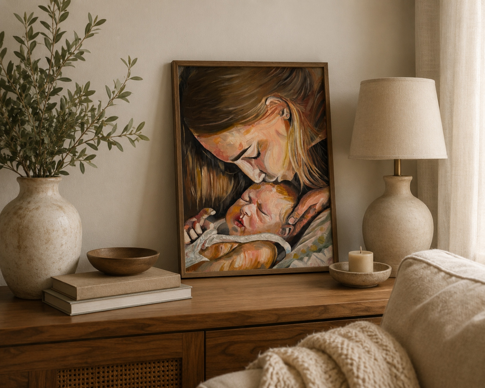
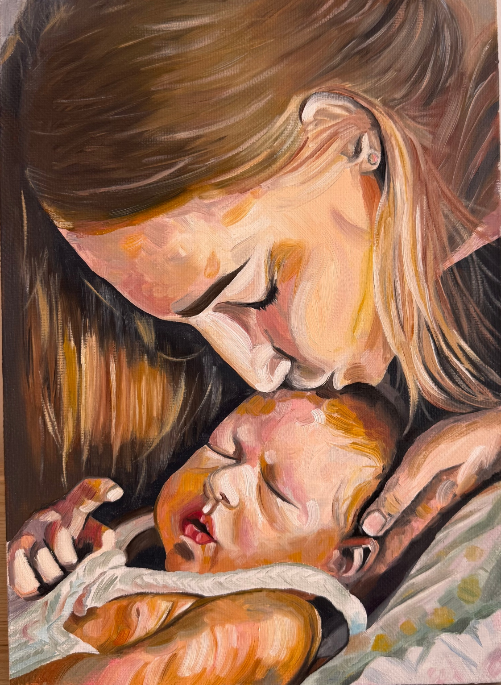

Холст на подрамнике, Лён
Масло
35 х 25 см.
Работа выполнена в экспрессивной живописной манере. Видимые мазки кисти не стремятся к фотографической точности, а создают ощущение живого движения и эмоциональной глубины. Тёплая палитра из охристых, розовых, кремовых и коричневых оттенков наполняет полотно уютом и светом, подчёркивая атмосферу спокойствия, безопасности и безусловной любви.
Контраст между мягкими светлыми оттенками кожи и более глубокими тёмными тонами волос создаёт выразительный акцент на эмоциональном центре композиции.


Эта картина передаёт один из самых трогательных и тихих моментов человеческой жизни — нежность между матерью и новорождённым ребёнком, о безмолвной заботе, тепле и любви, которые невозможно выразить словами.
Произведение вызывает чувство умиротворения и напоминает о ценности самых простых, но самых значимых моментов жизни.